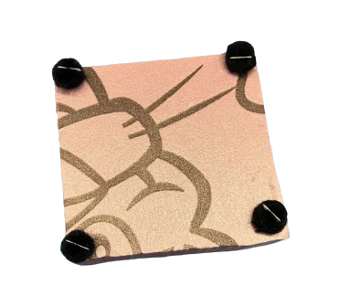
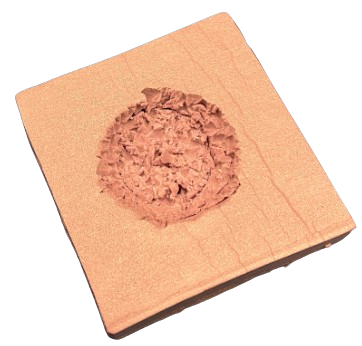
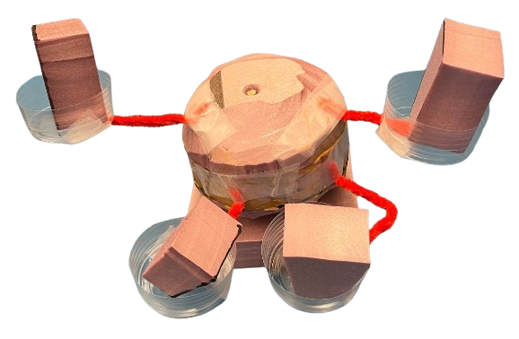
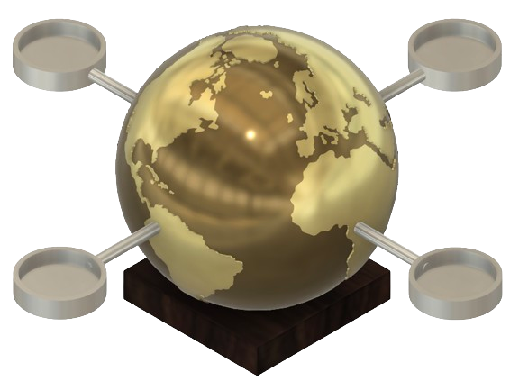

Shot Glass Stand
For my design and manufacturing class, I had to create something using at least two core
manufacturing processes. This project was supposed to be something unique, and something with
meaningful to us. Whenever I travel, I collect a shot glass for the city I am in, so that I
have something to rememver the ciytu that I was in, and because it usually has artwork that
is relevant to the cultural history of the city. So, I decided to make a shot glass stand that
had a globe as the centerpiece. Below, I will outline all the different steps in the creation
of this project.
-
Sketches
- The first part of my project was to create design sketches. I made very rough
annoatead sketches of what I loosely wanted the project to look like. Those
sketches are shown below.


Prototypes
- After going through a sketching phase, I next designed some rough rapid prototypes
to get a better physical representation of what the project would look like.
For the rapid protoype, I used pins and cotton balls to represent the rubber feet
at the base of the stand. I used pink foam for the base and for the globe. I used pipe
cleaners as the rods for the platforms, and cut the bottoms of small plastic cups to
create the platform base. These were connected with tape. I creaetd the globe by cutting
up and gluing pink foam to resemble a semi-spherical shape. Finally, I attached all of these
components to create my prototype.




CAD Models
- The next step in the process was to create a detailed CAD model of the entire
assembly of the shot glass stand. I used Fusion 360 to create my design.
the entire assembly.

Fabrication
- Before manufacturing my project in the lab, I created an operations
sequence outlining the steps I would take to create all of my parts
and assemble them. The operation sequence outlined all of the processes
that follow.
- Creating the Base: To create the wooden base, I started with a plank
of wood. First, I had to cutout the hole where the globe would sit. To
do so, I first laser cut the profile of the circular hole into a thin
piece of wood, which was used as a guide. The shape of the wood would
be 4” x 4” to sit flush with the wooden block. Then, I put the laser cut
piece on top of the block, and taped it down to secure it and used a hand
router to cut out a cylindrical hole to a depth of .375”. Finally, I made
the through holes for the screw connecting the globe to the wooden base.
I used the drill press, to create two through holes in the bottom of the base
using a ¼-20 drill bit. Then I made a counterbore using a ½-13 drill bit, with
a depth 0.2”. Next, I cut out a 3/4" x 4" x 4" block of wood from the 3/4"
x 4" x 12" plank, using the bandsaw. Finally, I sanded the wood and applied
Linseed oil to bring out the color of the walnut wood.
Creating the Globe: The globe was made from two bronze hemispheres
that were cast and then brazed together. First I had to 3D print an a mold
for sand casting the part. I created a modified hemisphere that was that had
drafts allowing me to pull the mold to be pulled out of the sand. Once I successully created two sand molds for the hemisphers, molten
bronze was pourded into the molds to create the two hemishperes
A lot of post processing work was necessary for the hemispheres to take
them from rough cast parts to the globe. The next steps were: tapping holes
for the platforms and attachment to the base into the hemispheres. Before I tapped
the holes, I had to use an angle grinder, a hand saw, and a belt sander to get rid of the
excess material that was on my parts from imperfections in the sand casting
process. When the excess material was gone, I used the mill to face of my edges
and tap the holes.
Once all of the holes had created, the next steps in the process were to remove the attachments
that had been used for creating the holes and then braze the two hemishperes together. I used the
sanding belt to sand down the hemishperes to remove the attachments, and flatten the two faces
that would be brazed together. Once this was completed, I used an oxygen torch and low temp
bronze to braze them together.
Next, the globe needed to be sanded down to a near mirror finish. To do so, I began sanding at
40 grit sand paper, and went all the way up to 1500 grit, in icriments of roughly 100, based on
what grits of sandpaper were available. The final component of creating the globe after it hand
been sanded was to create the patterns of the continents. To do so, I 3d printed thein profiles of
the continents. Then I used tape to attache them to the globe. Next, I bead blasted the globe,
which resulted in the oceans having a matte finish and the continents having a contrasting
mirror finish.
Creating the Platform Rods To create the platform rods, I started with some
aluminium rods, 3/8" in diameter. I cut the rods into 2.75" smaller rods and then used
the lathe to create external threads. The threads were 3/8 16 and were 1/4" long. Finally
I sanded and bead blasted the rods to give them a matte finish.
Creating the Platforms To create the platforms, I started with aluminum rods
that were 3" in diamter. I cut the rods into 0.7" long discs. Next, I had to cut out
the circular holes into the top of the platforms. To do so, I first drilled a center hole,
wide enough for the boring bar tool on the lathe to get in. Then, using the boring bar I cut
out the center hole into the top of the discs. Then, using the mill, I tapped 3/8 16 holes into
the sides of all of the platforms, so that they could be screwed on to the platform rods.
Final Product Here is the final result of my project, a shot glass
stand which is able to hold four different shot glasses.